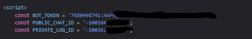
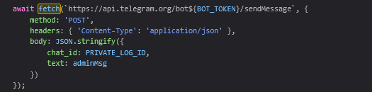
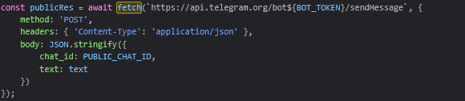

Security Review: Anonymous Student Confession Portal
This project is an anonymous student confession website. Users can send a confession, and the message is forwarded to Telegram. While looking through the website source code, I noticed that some important information and parts of the application's logic can be seen by anyone using the browser. As someone who is still learning web security, I found this interesting because it shows why developers should be careful about what they put in frontend code.
Since JavaScript runs in the user's browser, anyone can open Developer Tools or View Source to see the code. During my review, I was able to see things like API requests and other implementation details. From what I have learned, sensitive information should not be stored in client-side JavaScript because users can easily inspect it.
| Finding | Severity |
|---|---|
| Hardcoded Telegram Bot Token | 🔴 High |
| Client-side API Calls | 🟠 Medium |
| Device Fingerprinting | 🟠 Medium |
| Excessive Personal Data Collection | 🟠 Medium |
| Lack of Privacy Transparency | 🟡 Low |
I only performed a static analysis for this project. I reviewed the HTML and JavaScript files without testing or interacting with the backend server.
While checking the JavaScript code, I noticed that the Telegram Bot Token was written directly in the source code.

Because JavaScript is downloaded to every visitor's browser, anyone can reveal this token by using:
Exposing a bot token may allow unauthorized individuals to interact with the Telegram bot depending on its configuration.
I also found Telegram Chat IDs inside the source code that are used for sending submitted messages.
This reveals where submitted messages are being delivered and exposes internal implementation details that normally should remain server-side.
Instead of sending the data to its own backend server first, the website sends requests directly to:
https://api.telegram.org/bot<TOKEN>/sendMessage
This means every visitor can observe exactly how messages are transmitted.


While reading the code, I noticed that the website collects several pieces of information from visitors, including:
The Telegram Bot Token is embedded directly into client-side JavaScript.
Since the entire application logic executes inside the browser, users can easily understand how messages are sent, what information is collected, and which Telegram channels receive data.
Although the website is presented as anonymous, the code collects multiple pieces of device and browser information before forwarding data to Telegram (e.g., fingerprint info, persistent IDs, IP/GPS location, hardware specs, ISP data).
The application creates a persistent identifier using Local Storage:
localStorage.setItem(...)
Anonymous submission platforms often encourage users to believe their identity cannot be linked to submissions. However, this application collects additional metadata that could potentially be associated with users (device characteristics, network info, fingerprinting, persistent IDs, location data).
Developers should ensure users are informed about any collected data and follow applicable privacy requirements.
From this project, I learned that storing secrets in frontend code is not a good practice because anyone can inspect the website and view them. I also noticed that the website collects a lot of information from users before sending messages to Telegram, even though it presents itself as anonymous.
Overall, this was a good learning experience for me. It helped me understand common security mistakes in web applications and showed me why developers should protect sensitive information and be transparent about the data they collect.